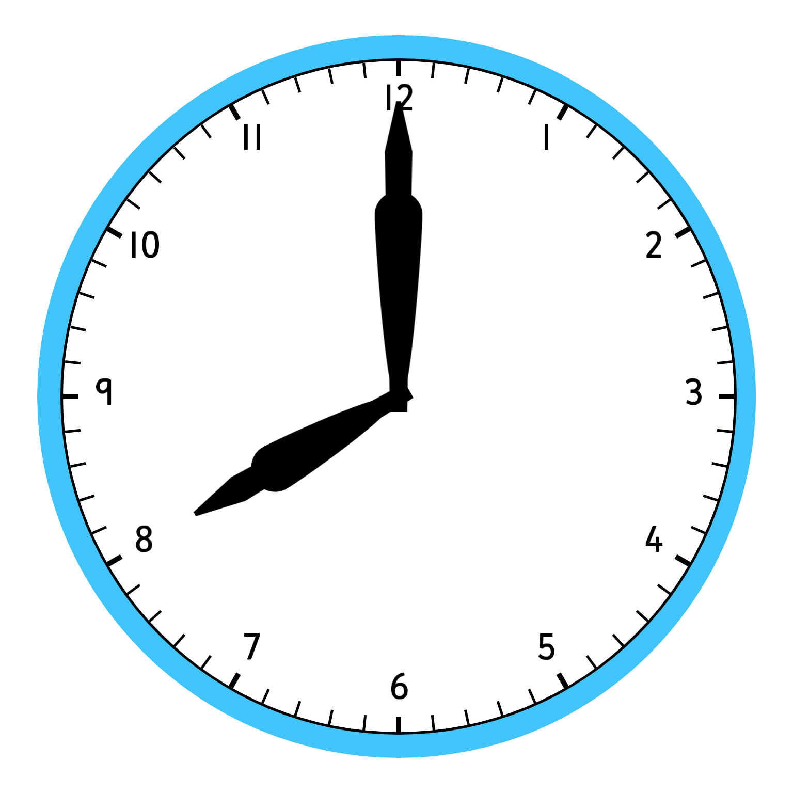
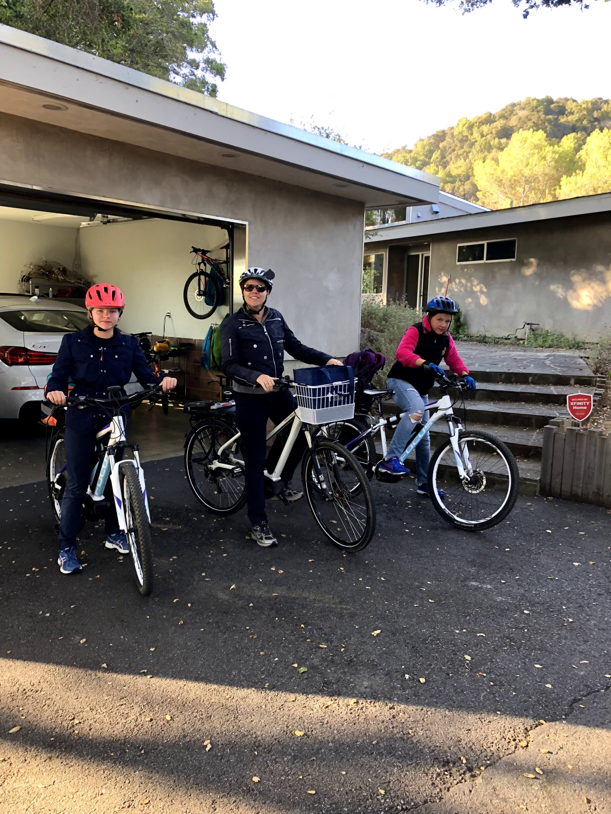

| Back | Next | Main Page |
|  |  |
After a super fun summer, 8th grade started. It would be my second year at Egan and our grade would be the oldest of the school again. Of course, I also had a new schedule with a lot of great teachers. The photo above shows my sister, my mom, and I biking to school.